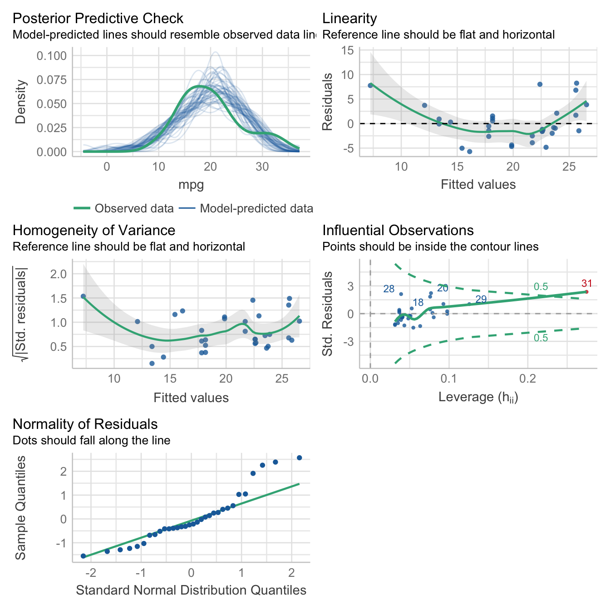
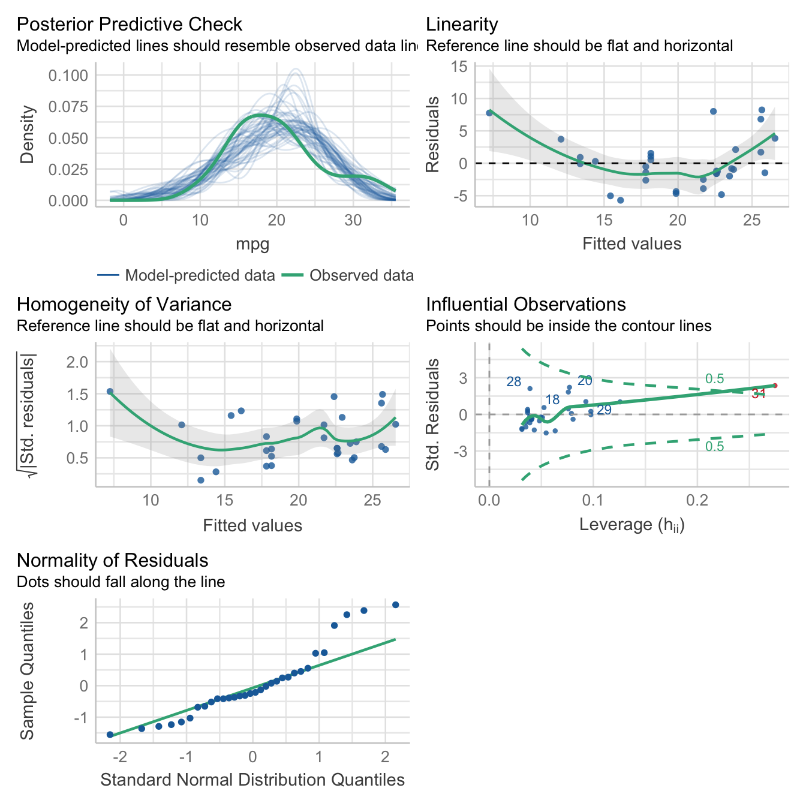
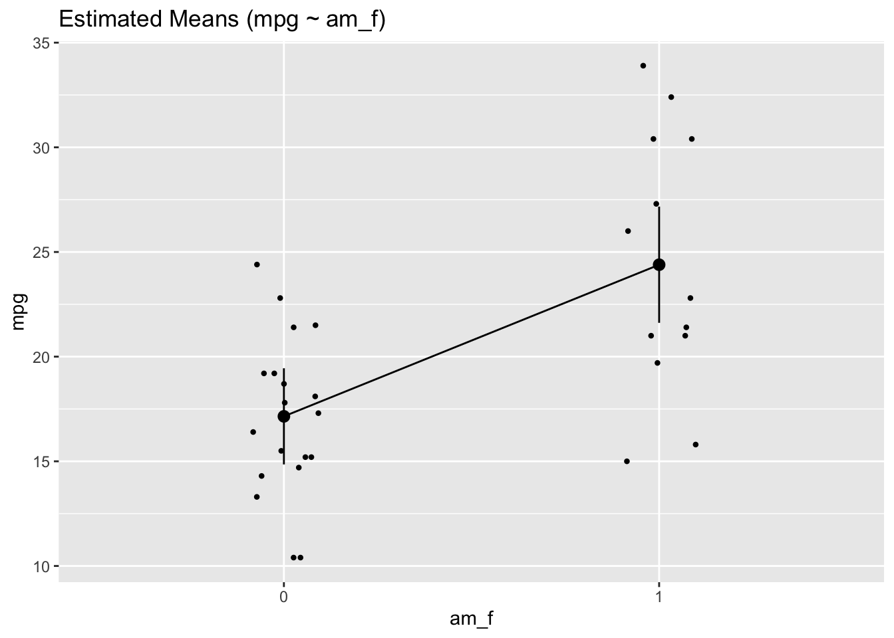
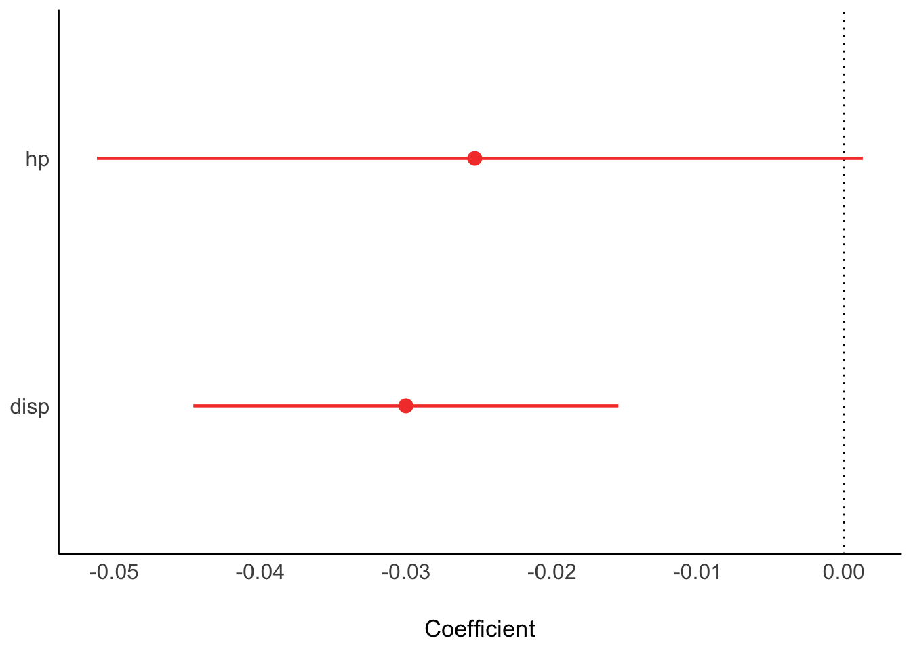
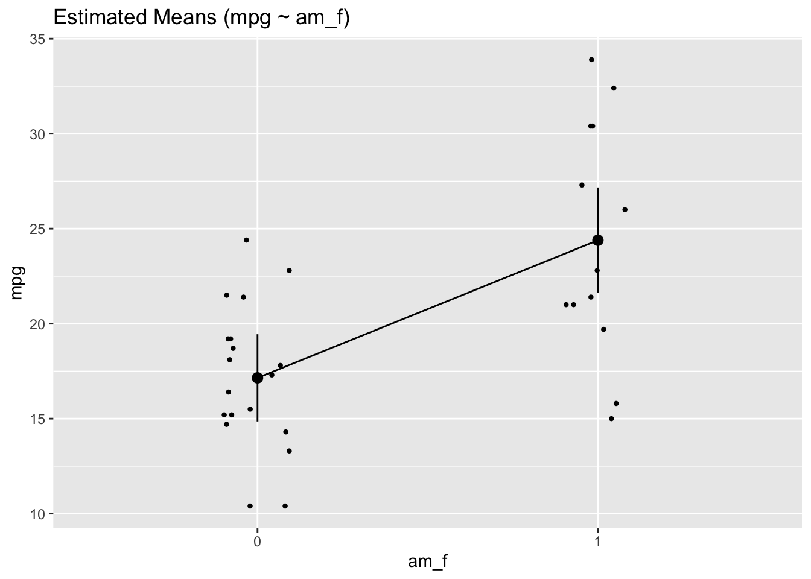
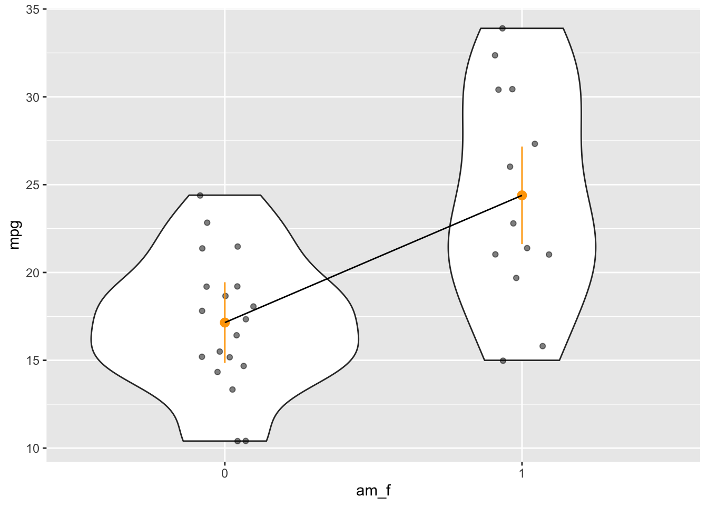
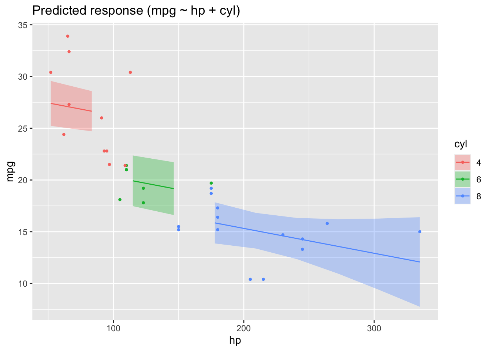

library(rstanarm)
library(tidyverse)
library(easystats)4 Regression basics

4.1 The linear model
Consider a model with \(k\) predictors:
\[y = \beta_0 + \beta_1 x_1 + \ldots + \beta_k x_k + \epsilon\]
4.2 Regression as the umbrella tool

Alternatively, venture into the forest of statistical tests as oultined eg here, at Uni Muenster.
You may want to ponder on this image of a decision tree of which test to choose, see Figure Figure 4.1.

4.2.1 Common statistical tests are linear models
As Jonas Kristoffer Lindeløv tells us, we can formulate most statistical tests as a linear model, ie., a regression.

4.2.2 How to find the regression line
In the simplest case, regression analyses can be interpreted geometrically as a line in a 2D coordinate system, see Figre Figure 4.2.

Put simple, we are looking for the line which is in the “middle of the points”. More precisely, we place the line such that the squared distances from the line to the points is minimal, see Figre Figure 4.2.
Consider Figure Figure 4.3, from this source by Roback and Legler (2021). It visualizes not only the notorious regression line, but also sheds light on regression assumptions, particularly on the error distribution.

4.2.3 Algebraic derivation
For the mathematical inclined, check out this derivation of the simple case regression model. Note that the article is written in German, but your browser can effortlessly translate into English. Here’s a similar English article from StackExchange.
4.3 R-packages needed
For this chapter, the following R packages are needed.
4.4 In all its glory

4.5 First model: one metric predictor
First, let’s load some data:
data(mtcars)
glimpse(mtcars)Rows: 32
Columns: 11
$ mpg <dbl> 21.0, 21.0, 22.8, 21.4, 18.7, 18.1, 14.3, 24.4, 22.8, 19.2, 17.8,…
$ cyl <dbl> 6, 6, 4, 6, 8, 6, 8, 4, 4, 6, 6, 8, 8, 8, 8, 8, 8, 4, 4, 4, 4, 8,…
$ disp <dbl> 160.0, 160.0, 108.0, 258.0, 360.0, 225.0, 360.0, 146.7, 140.8, 16…
$ hp <dbl> 110, 110, 93, 110, 175, 105, 245, 62, 95, 123, 123, 180, 180, 180…
$ drat <dbl> 3.90, 3.90, 3.85, 3.08, 3.15, 2.76, 3.21, 3.69, 3.92, 3.92, 3.92,…
$ wt <dbl> 2.620, 2.875, 2.320, 3.215, 3.440, 3.460, 3.570, 3.190, 3.150, 3.…
$ qsec <dbl> 16.46, 17.02, 18.61, 19.44, 17.02, 20.22, 15.84, 20.00, 22.90, 18…
$ vs <dbl> 0, 0, 1, 1, 0, 1, 0, 1, 1, 1, 1, 0, 0, 0, 0, 0, 0, 1, 1, 1, 1, 0,…
$ am <dbl> 1, 1, 1, 0, 0, 0, 0, 0, 0, 0, 0, 0, 0, 0, 0, 0, 0, 1, 1, 1, 0, 0,…
$ gear <dbl> 4, 4, 4, 3, 3, 3, 3, 4, 4, 4, 4, 3, 3, 3, 3, 3, 3, 4, 4, 4, 3, 3,…
$ carb <dbl> 4, 4, 1, 1, 2, 1, 4, 2, 2, 4, 4, 3, 3, 3, 4, 4, 4, 1, 2, 1, 1, 2,…4.5.1 Frequentist
Define and fit the model:
lm1_freq <- lm(mpg ~ hp, data = mtcars)Get the parameter values:
parameters(lm1_freq)Parameter | Coefficient | SE | 95% CI | t(30) | p
------------------------------------------------------------------
(Intercept) | 30.10 | 1.63 | [26.76, 33.44] | 18.42 | < .001
hp | -0.07 | 0.01 | [-0.09, -0.05] | -6.74 | < .001
Uncertainty intervals (equal-tailed) and p-values (two-tailed) computed
using a Wald t-distribution approximation.Plot the model parameters:
plot(parameters(lm1_freq))
4.5.2 Bayesian
lm1_bayes <- stan_glm(mpg ~ hp, data = mtcars, refresh = 0)Actually, we want to suppress some overly verbose output, using refresh = 0:
lm1_bayes <- stan_glm(mpg ~ hp, data = mtcars, refresh = 0)Get the parameter values:
parameters(lm1_bayes)Parameter | Median | 95% CI | pd | % in ROPE | Rhat | ESS | Prior
----------------------------------------------------------------------------------------------------
(Intercept) | 30.10 | [26.84, 33.48] | 100% | 0% | 1.001 | 3437.00 | Normal (20.09 +- 15.07)
hp | -0.07 | [-0.09, -0.05] | 100% | 100% | 1.001 | 3512.00 | Normal (0.00 +- 0.22)
Uncertainty intervals (equal-tailed) and p-values (two-tailed) computed
using a MCMC distribution approximation.Plot the model parameters:
plot(parameters(lm1_bayes))
4.5.3 Model performance
r2(lm1_freq)# R2 for Linear Regression
R2: 0.602
adj. R2: 0.589r2(lm1_bayes)# Bayesian R2 with Compatibility Interval
Conditional R2: 0.586 (95% CI [0.373, 0.744])4.5.4 Model check
check_model(lm1_freq)check_model(lm1_bayes)
4.5.5 Get some predictions
lm1_pred <- estimate_relation(lm1_freq)
lm1_predModel-based Expectation
hp | Predicted | SE | 95% CI
------------------------------------------
52.00 | 26.55 | 1.18 | [24.15, 28.95]
83.44 | 24.41 | 0.94 | [22.49, 26.32]
114.89 | 22.26 | 0.75 | [20.72, 23.80]
146.33 | 20.11 | 0.68 | [18.72, 21.51]
177.78 | 17.97 | 0.75 | [16.43, 19.50]
209.22 | 15.82 | 0.93 | [13.92, 17.73]
240.67 | 13.68 | 1.17 | [11.29, 16.07]
272.11 | 11.53 | 1.44 | [ 8.59, 14.48]
303.56 | 9.39 | 1.73 | [ 5.86, 12.92]
335.00 | 7.24 | 2.02 | [ 3.11, 11.38]
Variable predicted: mpg
Predictors modulated: hpMore details on the above function can be found on the respective page at the easystats site.
4.5.6 Plot the model
plot(lm1_pred)
4.6 More of this
More technical details for gauging model performance and model quality, can be found on the site of the R package “performance at the easystats site.
4.7 Bayes-members only
Bayes statistics provide a distribution as the result of the analysis, the posterior distribution, which provides us with quite some luxury.
As the posterior distribution manifests itself by a number of samples, we can easily filter and manipulate this sample distribution in order to ask some interesing questions.
See:
lm1_bayes %>%
as_tibble() %>%
head()# A tibble: 6 × 3
`(Intercept)` hp sigma
<dbl> <dbl> <dbl>
1 28.9 -0.0612 3.38
2 30.3 -0.0640 3.69
3 33.0 -0.0876 4.11
4 29.5 -0.0604 3.42
5 30.0 -0.0717 3.92
6 29.6 -0.0620 3.664.7.1 Asking for probabilites
What’s the probability that the effect of hp is negative?
lm1_bayes %>%
as_tibble() %>%
count(hp < 0)# A tibble: 1 × 2
`hp < 0` n
<lgl> <int>
1 TRUE 4000Feel free to ask similar questions!
4.7.2 Asking for quantiles
With a given probability of, say 90%, how large is the effect of hp?
lm1_bayes %>%
as_tibble() %>%
summarise(q_90 = quantile(hp, .9))# A tibble: 1 × 1
q_90
<dbl>
1 -0.0554What’s the smallest 95% percent interval for the effect of hp?
hdi(lm1_bayes)Highest Density Interval
Parameter | 95% HDI
----------------------------
(Intercept) | [26.70, 33.30]
hp | [-0.09, -0.05]In case you prefer 89% intervals (I do!):
hdi(lm1_bayes, ci = .89)Highest Density Interval
Parameter | 89% HDI
----------------------------
(Intercept) | [27.41, 32.70]
hp | [-0.09, -0.05]4.8 Multiple metric predictors
Assume we have a theory that dictates that fuel economy is a (causal) function of horse power and engine displacement.
lm2_freq <- lm(mpg ~ hp + disp, data = mtcars)
parameters(lm2_freq)Parameter | Coefficient | SE | 95% CI | t(29) | p
----------------------------------------------------------------------
(Intercept) | 30.74 | 1.33 | [28.01, 33.46] | 23.08 | < .001
hp | -0.02 | 0.01 | [-0.05, 0.00] | -1.86 | 0.074
disp | -0.03 | 7.40e-03 | [-0.05, -0.02] | -4.10 | < .001
Uncertainty intervals (equal-tailed) and p-values (two-tailed) computed
using a Wald t-distribution approximation.Similarly for Bayes inference:
lm2_bayes <- stan_glm(mpg ~ hp + disp, data = mtcars)Results
parameters(lm2_bayes)Parameter | Median | 95% CI | pd | % in ROPE | Rhat | ESS | Prior
------------------------------------------------------------------------------------------------------
(Intercept) | 30.74 | [28.02, 33.40] | 100% | 0% | 1.001 | 4960.00 | Normal (20.09 +- 15.07)
hp | -0.02 | [-0.05, 0.00] | 97.08% | 100% | 1.002 | 2002.00 | Normal (0.00 +- 0.22)
disp | -0.03 | [-0.04, -0.02] | 99.95% | 100% | 1.001 | 1815.00 | Normal (0.00 +- 0.12)
Uncertainty intervals (equal-tailed) and p-values (two-tailed) computed
using a MCMC distribution approximation.plot(parameters(lm2_bayes))
r2(lm2_bayes)# Bayesian R2 with Compatibility Interval
Conditional R2: 0.729 (95% CI [0.583, 0.844])Depending on the value of disp the prediction of mpg from hp will vary:
lm2_pred <- estimate_relation(lm2_freq)
plot(lm2_pred)
4.9 One nominal predictor
mtcars2 <-
mtcars %>%
mutate(am_f = factor(am))
lm3a <- lm(mpg ~ am_f, data = mtcars2)
parameters(lm3a)Parameter | Coefficient | SE | 95% CI | t(30) | p
------------------------------------------------------------------
(Intercept) | 17.15 | 1.12 | [14.85, 19.44] | 15.25 | < .001
am f [1] | 7.24 | 1.76 | [ 3.64, 10.85] | 4.11 | < .001
Uncertainty intervals (equal-tailed) and p-values (two-tailed) computed
using a Wald t-distribution approximation.lm3a_means <- estimate_means(lm3a, at = "am_f")
lm3a_means Estimated Marginal Means
am_f | Mean | SE | 95% CI
------------------------------------
0 | 17.15 | 1.12 | [14.85, 19.44]
1 | 24.39 | 1.36 | [21.62, 27.17]
Marginal means estimated at am_fplot(lm3a_means)
Note that we should have converted am to a factor variable before fitting the model. Otherwise, the plot won’t work.
Here’s a more hand-crafted version of the last plot:
ggplot(mtcars2) +
aes(x = am_f, y = mpg) +
geom_violin() +
geom_jitter(width = .1, alpha = .5) +
geom_pointrange(data = lm3a_means,
color = "orange",
aes(ymin = CI_low, ymax = CI_high, y = Mean)) +
geom_line(data = lm3a_means, aes(y = Mean, group = 1))
4.10 One metric and one nominal predictor
mtcars2 <-
mtcars %>%
mutate(cyl = factor(cyl))
lm4 <- lm(mpg ~ hp + cyl, data = mtcars2)
parameters(lm4)Parameter | Coefficient | SE | 95% CI | t(28) | p
-------------------------------------------------------------------
(Intercept) | 28.65 | 1.59 | [ 25.40, 31.90] | 18.04 | < .001
hp | -0.02 | 0.02 | [ -0.06, 0.01] | -1.56 | 0.130
cyl [6] | -5.97 | 1.64 | [ -9.33, -2.61] | -3.64 | 0.001
cyl [8] | -8.52 | 2.33 | [-13.29, -3.76] | -3.66 | 0.001
Uncertainty intervals (equal-tailed) and p-values (two-tailed) computed
using a Wald t-distribution approximation.lm4_pred <- estimate_relation(lm4)
plot(lm4_pred)
4.11 What about correlation?
Correlation is really a close cousin to regression. In fact, regression with standardized variables amounts to correlation.
Let’s get the correlation matrix of the variables in involved in lm4.
lm4_corr <-
mtcars %>%
select(mpg, hp, disp) %>%
correlation()
lm4_corr# Correlation Matrix (pearson-method)
Parameter1 | Parameter2 | r | 95% CI | t(30) | p
--------------------------------------------------------------------
mpg | hp | -0.78 | [-0.89, -0.59] | -6.74 | < .001***
mpg | disp | -0.85 | [-0.92, -0.71] | -8.75 | < .001***
hp | disp | 0.79 | [ 0.61, 0.89] | 7.08 | < .001***
p-value adjustment method: Holm (1979)
Observations: 32plot(summary(lm4_corr))
4.12 Exercises
4.13 Lab
Get your own data, and build a simple model reflecting your research hypothesis. If you are lacking data (or hypothesis) get something close to it.
4.14 Further reading
Roback and Legler (2021) provide and more than introductory account of regression while being accessible. A recent but still classic book (if this is possible) is the book by Gelman, Hill, and Vehtari (2021).
4.15 Debrief